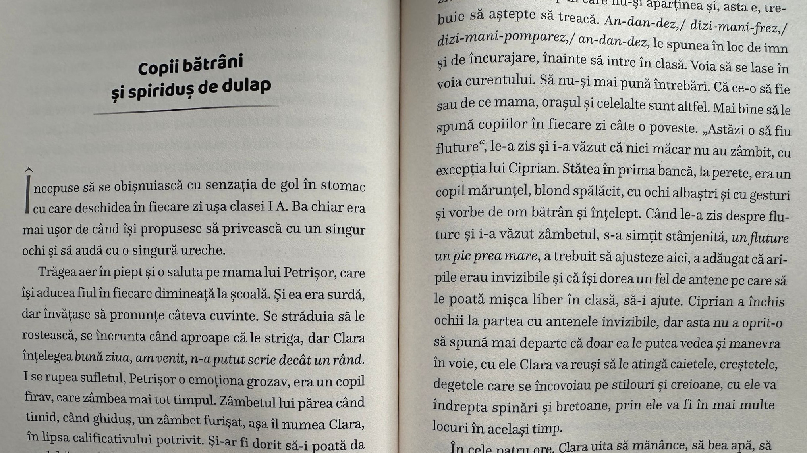
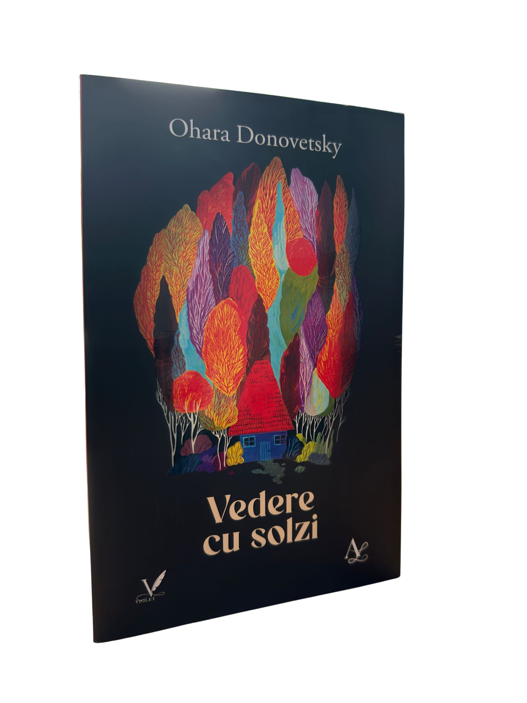

Vedere cu solzi


Vedere cu solzi
Despre carte
Vedere cu solzi este o poveste scrisa cu finete si intensitate, in care memoria, fragilitatea si maturizarea se intalnesc intr-un univers profund intim. Cartea urmareste drumul unei tinere aflate intre copilarie si varsta adulta, surprinzand cu sensibilitate felul in care amintirile, fricile si micile revelatii ajung sa modeleze identitatea. Atmosfera este delicata, vie si nelinistitor de sincera, iar lectura lasa impresia unei confesiuni care continua sa rasune mult dupa ultima pagina.
Citeste despre carteOhara Donovetsky
Despre autoare
Ohara Donovetsky scrie cu luciditate, sensibilitate si un simt remarcabil al detaliului, construind texte care raman aproape de cititor prin sinceritate si forta emotionala. Scrisul ei exploreaza teme precum identitatea, vulnerabilitatea, memoria si felul in care experientele intime pot deveni literatura cu rezonanta universala.
- Un parcurs literar definit prin autenticitate si voce distincta
- Volume si aparitii editoriale care contureaza un univers recognoscibil
- Prezente culturale, cronici si dialoguri cu publicul cititor
Recenzii
Ecouri de la cititori si critici
In aceasta sectiune se aduna impresii, cronici si reactii care completeaza experienta lecturii. Este spatiul in care cartea continua sa traiasca prin vocile celor care au citit-o, au comentat-o si au descoperit in ea propriile lor intrebari, emotii sau amintiri.
Vezi recenziile
Informatii
Contact
Aici poti adauga informatii utile pentru cititori, colaboratori sau presa: date de contact, retele sociale, disponibilitate pentru evenimente sau alte detalii importante despre activitatea mea.
Vezi bibliografiaFormularul de contact este dezactivat momentan.